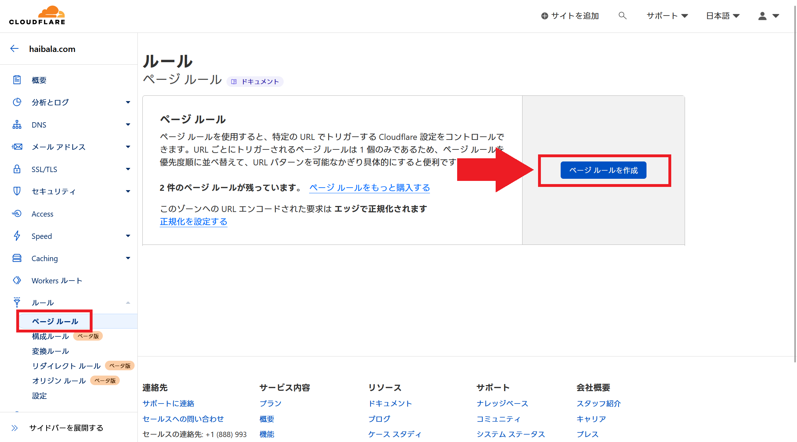

更新：
Github Pages等で立ち上げてCloudflareで自分のドメインと紐づけたウェブサイトが、httpで始まるURLで見れてしまうので"https..."にリダイレクトさせたい。
ページルールを使う。
Cloudflareを開いて、リダイレクトを設定したいドメインを選びます。（写真の場合はhaibala.com）
左のメニューからルール＞ページルールを選びます。
右側の「ページルールを作成」のボタンを選びます。
URLにはhttp://と自分のドメインを組み合わせたものを入力します。設定の選択から"URLの転送"を選び、転送先URLにhttps://と自分のドメインを組み合わせたものを入力します。
ステータスコードは永久リダイレクトにしておきます。
これで設定は完了したので、適当なブラウザでアドレスバーにhttp://+(自分のドメイン)を入力して、自動的にhttps://...に変わるかを確かめます。
リダイレクトに設定してSSL/TLSもフレキシブルにしたのに、どうしてGithub Pagesでhttps化が選べないんでしょうか（泣）
有識者さん助けてください。